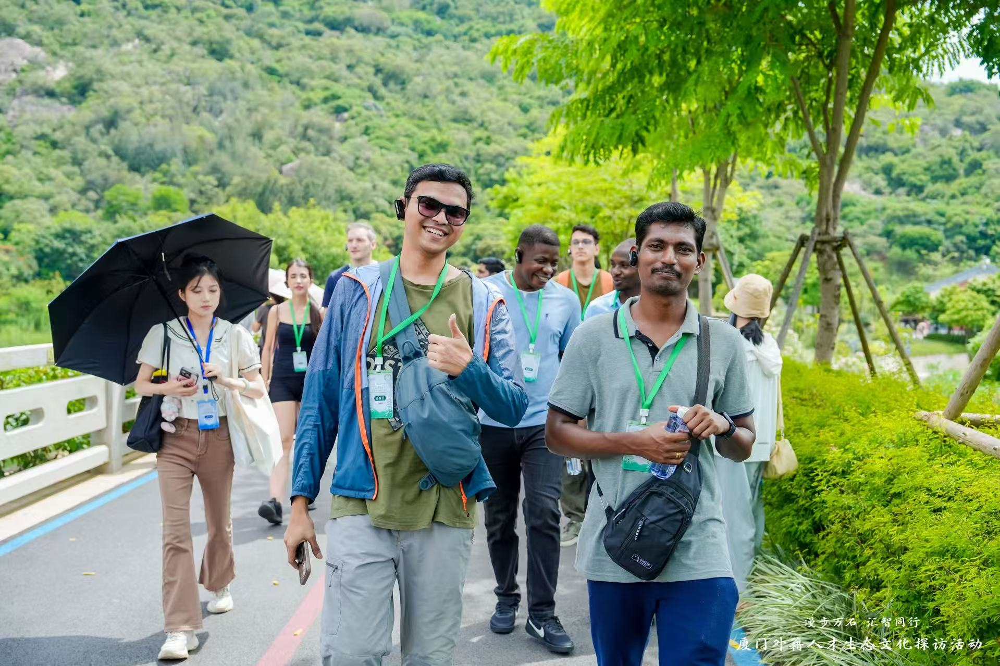
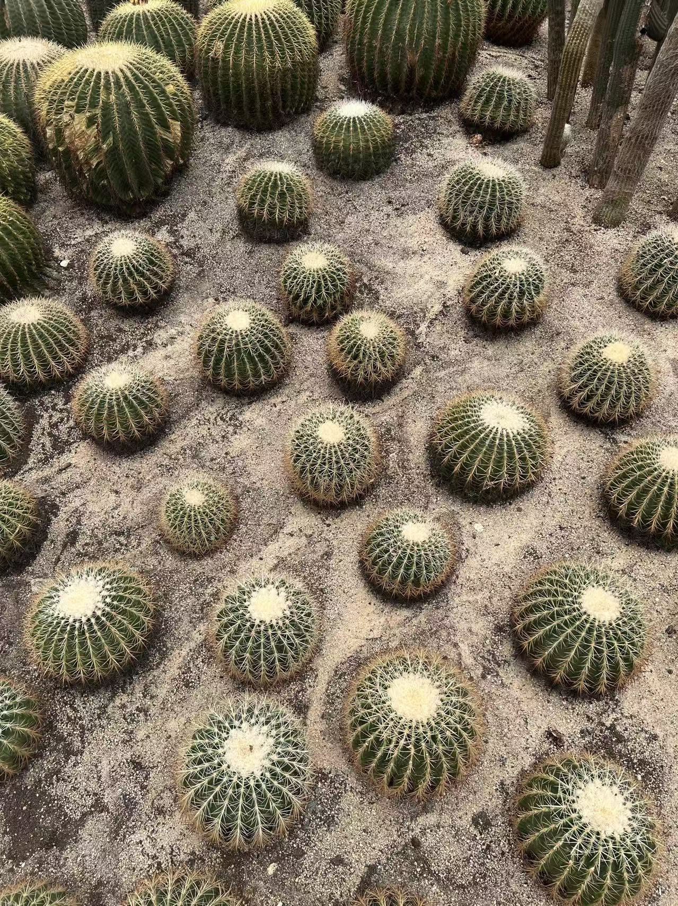
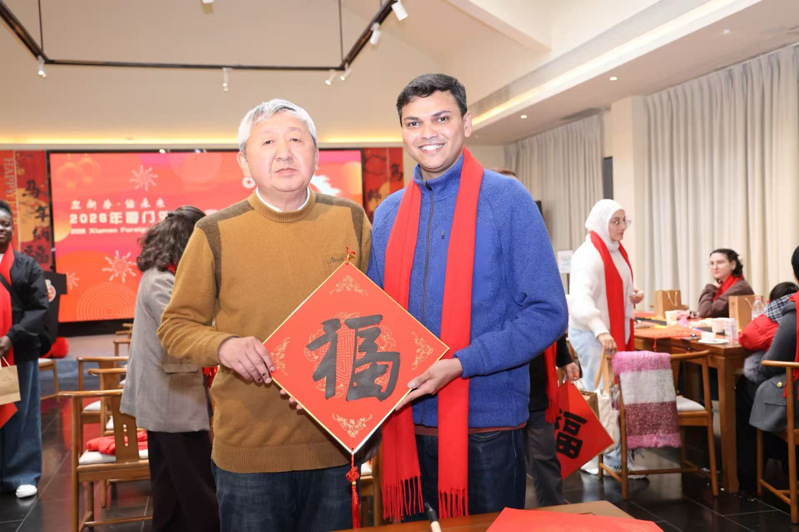
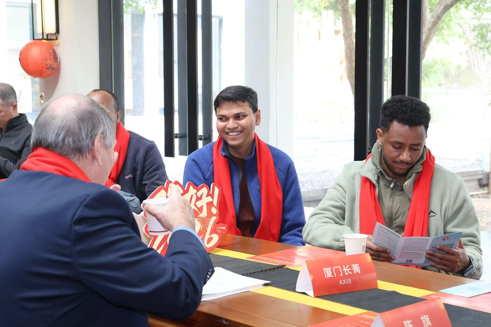
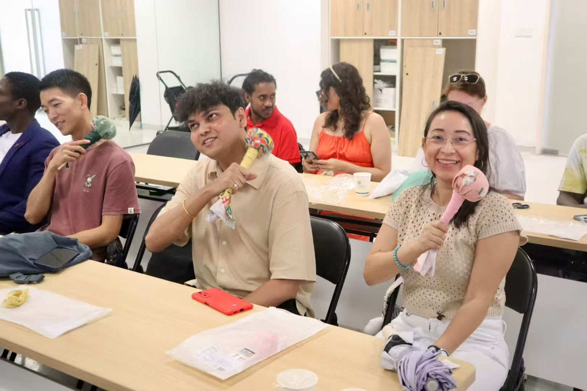
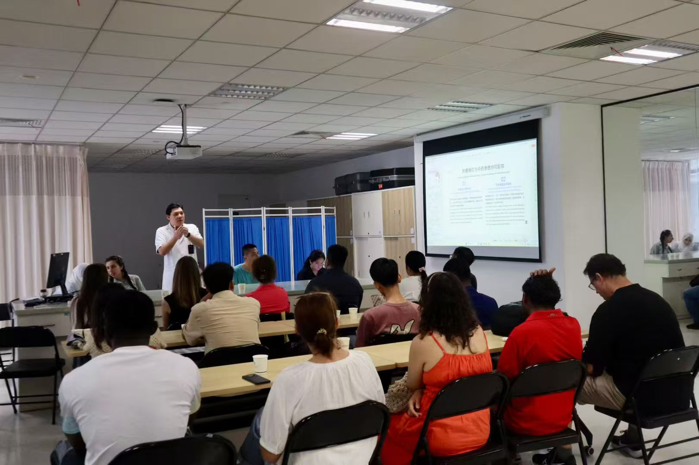

Life Beyond Research
Life as a researcher is also shaped by the places we visit, people we meet, cultures we experience, and opportunities to explore beyond our usual academic environment. I am grateful for the experiences and cultural activities that have allowed me to discover different aspects of life in Xiamen and China.
2026
Exploring Xiamen Botanical Garden
As part of a talent-oriented cultural and social programme organised by the Xiamen Municipal Bureau of Human Resources and Social Affairs, I had the opportunity to visit the Xiamen Botanical Garden. The visit offered a wonderful opportunity to explore the diversity of plants and experience the natural beauty of Xiamen. We were guided by experts who provided a bilingual tour, sharing not only fascinating information about the plants but also the history of the garden and interesting stories behind its botanical collections.


Stone Museum, Traditional Craft and New Year Celebration
Another cultural experience brought us to a stone museum as part of a New Year celebration programme. We explored the history and cultural significance of stone craftsmanship, learned about traditional lithography, and enjoyed a puppet performance. It was a memorable opportunity to experience local traditions and creative craftsmanship beyond the academic environment.


2025
Traditional Chinese Medicine and Cultural Experience
Through a talent programme organised by the Xiamen Municipal Bureau of Human Resources and Social Affairs, I had the opportunity to visit a Traditional Chinese Medicine hospital in Xiamen. We explored the hospital facilities, met experienced doctors, and learned about traditional approaches to healthcare. One of the highlights was a demonstration of acupuncture by a physician, followed by a hands-on cultural workshop where we learned how to make a traditional medicinal acupressure hammer using herbs, including mugwort. It was a fascinating experience combining traditional knowledge, cultural learning, and hands-on participation.

